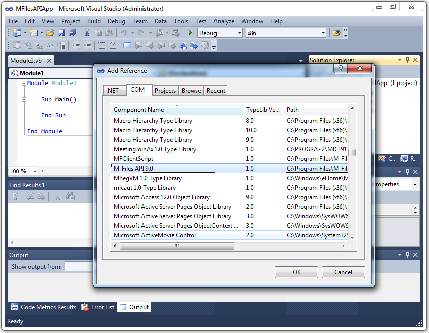

Getting Started with M-Files API
Before you start creating an M-Files API application, make sure you are familiar with M-Files concepts and features. Install the M-Files Desktop and M-Files Server components and examine operations in both the M-Files Desktop and the M-Files Admin applications. Always use a dedicated server for prototyping, developing and testing your application. Do not use production environment for development purposes.
Various development environments and languages can be used to develop M-Files API applications. The main requirement is to have support for COM/ActiveX components. For example, Microsoft's .NET based development tools like C# and Visual Basic .NET can be used, as well as managed and standard C++.
Creating M-Files API Applications
The M-Files API interface needs to be included in your application project in order for you to be able to utilize it. The API is implemented as a COM DLL file, which is placed in the M-Files installation directory. If your computer has M-Files software installed, the M-Files API component should also be installed along with it.
Because the API is registered as a COM component, many application development environments provide a direct reference to the file via their user interface. The picture below shows how to add the M-Files API component to a Visual Basic project. With other languages and environments, refer to the language documentation for details.

Adding M-Files API as a reference to a Visual Basic project.
Choosing Between the Client and the Server Interfaces
You can use the M-Files API to access the M-Files client application, or you can choose to use the API to access the M-Files server directly. By using the client application, you can use client-side features like the Windows-integrated user interface. With the client interface, you will also gain a performance benefit, because the client application has local caches for documents. On the other hand, by using the M-Files Server interface directly you can write applications without the requirement of having the M-Files client application installed.
Getting Started with the M-Files Client Interface
The main high-level object of the M-Files API component is the MFilesClientApplication Object. This is the first object you create when writing an application that uses the M-Files API.
| Creating an MFilesClientApplication Object (Visual Basic) |  Copy Code Copy Code |
|
|---|---|---|
|
||
| Logging into a Known Document Vault (Visual Basic) | Copy Code |
|
|---|---|---|
|
||
| Locating a File in M-Files (Visual Basic) | Copy Code |
|
|---|---|---|
|
||
Getting Started with the M-Files Server Interface
The main M-Files component for accessing the server interface is the MFilesServerApplication Object. After creating the application object, you need to connect it to the server.
| Creating an MFilesServerApplication and Connecting it to the Server (Visual Basic) | Copy Code |
|
|---|---|---|
|
||
After the application component has been connected to the server, you can log in to the document vault. If you know the GUID of the vault, you can log in directly to the vault. Alternatively, you can loop through all the vaults to find the one you need.
| Logging into the Vault (Visual Basic) | Copy Code |
|
|---|---|---|
|
||
Using the Vault
Regardless of whether you are accessing M-Files through the client or server interface, operations on the vault are performed with the help of the Vault Object. It is the most important high-level object available in the M-Files API.
The vault object itself has just a few vault-related methods and properties. The actual interaction with the contents of a vault is achieved via the operation interfaces provided by the vault object.
Examples of operation interfaces:
- VaultClientOperations Object
- VaultManagementOperations Object
- VaultObjectOperations Object
- VaultObjectFileOperations Object
- VaultViewOperations Object
- VaultObjectSearchOperations Object
- VaultLoginAccountOperations Object
- VaultUserOperations Object
- VaultUserGroupOperations Object
- VaultClassOperations Object
- VaultClassGroupOperations Object
- VaultValueListOperations Object
- VaultObjectTypeOperations Object
- VaultObjectPropertyOperations Object
- VaultWorkflowOperations Object
As a rule of thumb, all vault modifications are performed directly via the operation interfaces. Other objects, obtained via the operation interfaces, are data container objects only. Either they are stateless or they gain their state when they are created without maintaining a connection to the vault. Therefore, modifying the state of a container object does not create a change in the vault.
Identifying Objects, Versions and Files
Each document or other vault object is identified in the vault by an object identifier. At its simplest, this is just an ID number, which is unique for all vault objects within the object type. API methods use ObjID Objects consisting of the object identifier number and the object type identifier number.
However, most vault operations are not targeted for the object as a whole, but rather for one particular object version. For example, documents seen in the user interface or referred to in applications are actually versions of vault objects. In order to identify a particular version of an object, we need to add a version number to the identifier. An ObjVer Object consists of the ObjID object and the object version number. The version number has a special value of -1, which identifies the latest version available.
| Getting the Latest Object Version Identifier (Visual Basic) | Copy Code |
|
|---|---|---|
|
||
Each document or other vault object can have zero or more files. Files have identifiers (unique within the object) and version numbers encapsulated in the FileVer Object. The version number of the file is independent of the version number of the vault object.
Working with Vault Objects
Most of the version-related operations and properties of the vault objects are available via the ObjectVersion Object. The metadata-related operations and properties of the objects can be accessed via the ObjectVersionAndProperties Object. References to these objects can be accessed by using the VaultObjectOperations Object.
Working with Object Metadata
The ObjectVersionAndProperties Object contains a set of the property values of the object as PropertyValue Objects. These objects contain a link to the property definition declaring the actual type of the metadata property as a PropertyDef Object as well as a TypedValue Object that determines the actual value of the property.
The property value can be one of the basic types or any of the lookup types listed in the MFDataType Enumeration. Basic types represent a standalone text or a number as seen in the interface. Lookup or multi-select lookup types are reference types, meaning that they are used to refer to other objects or value list items. See the TypedValue Object for more details.
The object class is also listed among the metadata properties of the object. It can be resolved by using the lookup reference of a class property value. The object class has its own interface object, ObjectClass Object. See ObjectClass and VaultClassOperations Object for more details.
Working with Object Files
An object may contain multiple object files, each represented by the ObjectFile Object. An ObjectFile object actually represents just a single version of the object file. To encapsulate both the file version and the parent object version, use the ObjectVersionFile Object.
The VaultObjectFileOperations Object provides methods for adding and removing object files.
Working with Workflows and Assignments
The VaultWorkflowOperations Object provides access to workflow items and states. Because the workflow and assigment settings of a vault object are part of the metadata of the object, changes in workflows and assignments can be performed by using the VaultObjectPropertyOperations Object.
Working with Views and Searches
Searches can be performed by using the VaultObjectSearchOperations Object. In most cases, the results are provided as an ObjectSearchResults Collection. The search is defined by using a SearchCondition Object or a SearchConditions Collection. The SearchCondition object is defined by using an Expression Object as an operator and a TypedValue Object as a right operand. The search results consist of vault objects for which the search conditions are evaluated as true.
Views behave like searches. They consist of a condition for getting the result set and some additional parameters for displaying the result. The View Object represents a single view. Views can be managed by using the VaultViewOperations Object.
Using User Interface Components
If the MFiles API is used with a client interface connection (the MFilesClientApplication Object), several UI components can be used via the API. Most of these methods are contained in the VaultObjectOperations Object. The VaultViewOperations Object contains some view-related UI methods. Most of the UI-related operations need to have a parent window handle (HWND) to show a child window.
Deploying M-Files API Applications
In order to use applications utilizing the M-Files API in client mode, the M-Files client software must be installed on the computer and the M-Files Client service must be running.
To use applications with the M-Files API in the server interface mode, the M-Files API component must be installed, which is included in any M-Files software installation. The M-Files client or server services do not need to run on the client computer.
Code Samples
For M-Files API samples, visit https://www.m-files.com/api.